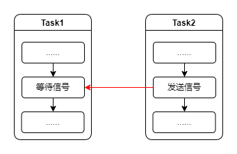

<!DOCTYPE lake>
<h2 data-lake-id="eOjCA" id="eOjCA"><span data-lake-id="u0acabec3" id="u0acabec3">学习目标</span></h2><ol list="ud0175c57"><li data-lake-id="u00346b91" fid="ub6b4f2c1" id="u00346b91"><span data-lake-id="u3ca1116f" id="u3ca1116f">理解信号量的概念</span></li><li data-lake-id="u752fff5d" fid="ub6b4f2c1" id="u752fff5d"><span data-lake-id="u64092b16" id="u64092b16">掌握信号量发流程</span></li><li data-lake-id="u14f415f4" fid="ub6b4f2c1" id="u14f415f4"><span data-lake-id="u825274a2" id="u825274a2">掌握二进制信号量</span></li><li data-lake-id="u395f7cb2" fid="ub6b4f2c1" id="u395f7cb2"><span data-lake-id="u1a83d90b" id="u1a83d90b">熟悉计数型信号量</span></li><li data-lake-id="uf28be82c" fid="ub6b4f2c1" id="uf28be82c"><span data-lake-id="u353bc5da" id="u353bc5da">掌握互斥信号量</span></li><li data-lake-id="u44d525e8" fid="ub6b4f2c1" id="u44d525e8"><span data-lake-id="uac9f8283" id="uac9f8283">熟悉递归互斥信号量</span></li></ol><h2 data-lake-id="M0aoH" id="M0aoH"><span data-lake-id="uc6896744" id="uc6896744">学习内容</span></h2><h3 data-lake-id="T4MGG" id="T4MGG"><span data-lake-id="ud0c8924f" id="ud0c8924f">概念</span></h3><p data-lake-id="u20d6f53e" id="u20d6f53e"><span data-lake-id="uc5357e1a" id="uc5357e1a">在 FreeRTOS 中，信号量（Semaphore）是一种用于实现任务之间同步和资源共享的机制。它是一种计数型的同步原语，用于控制对共享资源的访问和保护。利用信号量可以减少系统资源浪费，提高任务运行效率。</span></p><p data-lake-id="u4f9b6d60" id="u4f9b6d60"><span data-lake-id="u7362822a" id="u7362822a">在FreeRTOS中，包含4种类型的信号量：</span></p><ol list="ua056441f"><li data-lake-id="u668960ca" fid="u7bc2dfbc" id="u668960ca"><span data-lake-id="ud87b9393" id="ud87b9393">二进制信号量（Binary Semaphore）：</span></li></ol><p data-lake-id="uf5de82fd" id="uf5de82fd" style="padding-left: 2em"><span data-lake-id="u056d538f" id="u056d538f">二进制信号量是最基本的信号量类型。它的计数值要么为0（表示信号量已被获取），要么为1（表示信号量可用）。二进制信号量常用于实现互斥访问共享资源的场景，只允许一个任务访问资源。</span></p><p data-lake-id="ud49a02f6" id="ud49a02f6" style="padding-left: 2em"><span data-lake-id="u7da5271c" id="u7da5271c">在 FreeRTOS 中，你可以使用 </span><code data-lake-id="ua6c30d83" id="ua6c30d83"><span data-lake-id="u4b56369e" id="u4b56369e">xSemaphoreCreateBinary()</span></code><span data-lake-id="ua739fc31" id="ua739fc31"> 函数创建一个二进制信号量。任务可以通过 </span><code data-lake-id="u76631094" id="u76631094"><span data-lake-id="u9d6a7189" id="u9d6a7189">xSemaphoreTake()</span></code><span data-lake-id="ua967a7a3" id="ua967a7a3"> 函数获取信号量，通过 </span><code data-lake-id="uee4c9b93" id="uee4c9b93"><span data-lake-id="u7ab64492" id="u7ab64492">xSemaphoreGive()</span></code><span data-lake-id="u56610d28" id="u56610d28"> 函数释放信号量。</span></p><ol list="uf0503c08" start="2"><li data-lake-id="u813ef0ad" fid="uc207f7fc" id="u813ef0ad"><span data-lake-id="u90afeeae" id="u90afeeae">计数型信号量（Counting Semaphore）：</span></li></ol><p data-lake-id="u68516425" id="u68516425" style="padding-left: 2em"><span data-lake-id="uce5e86f9" id="uce5e86f9">计数型信号量允许指定初始计数值，并支持多个任务同时获取信号量。计数型信号量的计数值表示可用的资源数量。</span></p><p data-lake-id="uab041a0e" id="uab041a0e" style="padding-left: 2em"><span data-lake-id="ucee60f69" id="ucee60f69">在 FreeRTOS 中，你可以使用 </span><code data-lake-id="u4a193824" id="u4a193824"><span data-lake-id="u8f242672" id="u8f242672">xSemaphoreCreateCounting()</span></code><span data-lake-id="ud1ec3769" id="ud1ec3769"> 函数创建一个计数型信号量。任务可以使用 </span><code data-lake-id="ue15544d6" id="ue15544d6"><span data-lake-id="ufd4ffb6b" id="ufd4ffb6b">xSemaphoreTake()</span></code><span data-lake-id="u2356fed2" id="u2356fed2"> 函数获取信号量，使用 </span><code data-lake-id="ub5891ddc" id="ub5891ddc"><span data-lake-id="u04855f8b" id="u04855f8b">xSemaphoreGive()</span></code><span data-lake-id="u45c66e66" id="u45c66e66"> 函数释放信号量。</span></p><ol list="u77553871" start="3"><li data-lake-id="ubab4fd14" fid="u2a76c7c7" id="ubab4fd14"><span data-lake-id="u354cb429" id="u354cb429">互斥信号量（Mutex Semaphore）：</span></li></ol><p data-lake-id="ubd047bb2" id="ubd047bb2" style="padding-left: 2em"><span data-lake-id="uf21320e7" id="uf21320e7">互斥信号量也用于实现资源的互斥访问，类似于二进制信号量。但与二进制信号量不同的是，互斥信号量允许同一个任务</span><strong><span data-lake-id="u6481a3f0" id="u6481a3f0">多次获取</span></strong><span data-lake-id="u63b5566d" id="u63b5566d">信号量，而不会导致死锁。具有优先级继承的特性。在任务持有互斥信号量时，其他任务无法获取该信号量，必须等待该任务释放信号量，优先级最高的任务会优先获取到信号量。</span></p><p data-lake-id="ubd436b6f" id="ubd436b6f" style="padding-left: 2em"><span data-lake-id="u638f6739" id="u638f6739">在 FreeRTOS 中，你可以使用 </span><code data-lake-id="u3d401149" id="u3d401149"><span data-lake-id="u962392c7" id="u962392c7">xSemaphoreCreateMutex()</span></code><span data-lake-id="u81d4ca51" id="u81d4ca51"> 函数创建一个互斥信号量。任务可以使用 </span><code data-lake-id="ucaeb0bd1" id="ucaeb0bd1"><span data-lake-id="ud3525f8a" id="ud3525f8a">xSemaphoreTake()</span></code><span data-lake-id="ub649588d" id="ub649588d">函数获取信号量，使用 </span><code data-lake-id="uf301b199" id="uf301b199"><span data-lake-id="uc2eed51f" id="uc2eed51f">xSemaphoreGive()</span></code><span data-lake-id="ufd6fc18d" id="ufd6fc18d"> 函数释放信号量。</span></p><ol list="u1cc19ebe" start="4"><li data-lake-id="u5aeefe6d" fid="u66915f87" id="u5aeefe6d"><span data-lake-id="ube4ea353" id="ube4ea353">递归互斥信号量（Recursive Mutex Semaphore）：</span></li></ol><p data-lake-id="udc4f388d" id="udc4f388d" style="padding-left: 2em"><span data-lake-id="u00db4021" id="u00db4021">递归互斥信号量是一种特殊的信号量类型，用于解决任务在嵌套调用中对资源的重复获取。它允许同一个任务多次获取信号量而不会导致死锁。</span></p><p data-lake-id="u6a410697" id="u6a410697" style="padding-left: 2em"><span data-lake-id="ue1fcfd6c" id="ue1fcfd6c">在 FreeRTOS 中，你可以使用 </span><code data-lake-id="u4b3863f9" id="u4b3863f9"><span data-lake-id="ufb7f7478" id="ufb7f7478">xSemaphoreCreateRecursiveMutex()</span></code><span data-lake-id="u9761bda5" id="u9761bda5"> 函数创建一个递归互斥信号量。任务可以使用 </span><code data-lake-id="u3604b6e5" id="u3604b6e5"><span data-lake-id="u68bb4652" id="u68bb4652">xSemaphoreTakeRecursive()</span></code><span data-lake-id="ud4bc6e77" id="ud4bc6e77"> 函数多次获取信号量，并使用 </span><code data-lake-id="u210f47fa" id="u210f47fa"><span data-lake-id="ufa6853fd" id="ufa6853fd">xSemaphoreGiveRecursive()</span></code><span data-lake-id="ueccfdfb2" id="ueccfdfb2"> 函数相应地释放信号量。</span></p><h3 data-lake-id="jj21l" id="jj21l"><span data-lake-id="u33121b4e" id="u33121b4e">开发流程</span></h3><ol list="ua4d96c7b"><li data-lake-id="ude4263ec" fid="ua0e8c882" id="ude4263ec"><span data-lake-id="u63130fbd" id="u63130fbd">创建信号量</span></li><li data-lake-id="u744c8804" fid="ua0e8c882" id="u744c8804"><span data-lake-id="u2211c133" id="u2211c133">开启一个任务，用来等待信号量</span></li><li data-lake-id="uf420d731" fid="ua0e8c882" id="uf420d731"><span data-lake-id="u6638d630" id="u6638d630">开启一个任务，用来发送信号量</span></li></ol><p data-lake-id="ufe6ef3cd" id="ufe6ef3cd"></p><h3 data-lake-id="O0EeK" data-lake-index-type="2" id="O0EeK"><span data-lake-id="u9e8e537a" id="u9e8e537a">二进制信号量</span></h3><table class="lake-table" data-lake-id="j3PFk" id="j3PFk" margin="true" style="width: 500px" width-mode="contain"><colgroup><col width="250"/><col width="250"/></colgroup><tbody><tr data-lake-id="u62b548cd" id="u62b548cd"><td data-lake-id="uc967d73d" id="uc967d73d"><p data-lake-id="u23a26ac3" id="u23a26ac3" style="text-align: center"><span data-lake-id="u2dc0d2a0" id="u2dc0d2a0">功能</span></p></td><td data-lake-id="u37aee283" id="u37aee283"><p data-lake-id="u42ecb7a5" id="u42ecb7a5" style="text-align: center"><span data-lake-id="u34bba09b" id="u34bba09b">描述</span></p></td></tr><tr data-lake-id="u991b4f76" id="u991b4f76"><td data-lake-id="uebdb65c1" id="uebdb65c1"><p data-lake-id="u7aad460c" id="u7aad460c" style="text-align: center"><span data-lake-id="ufda121f2" id="ufda121f2">xSemaphoreCreateBinary</span></p></td><td data-lake-id="u9334a326" id="u9334a326"><p data-lake-id="ueea0adb7" id="ueea0adb7" style="text-align: center"><span data-lake-id="ufe06c8bc" id="ufe06c8bc">创建二进制信号量</span></p></td></tr><tr data-lake-id="ue823e109" id="ue823e109"><td data-lake-id="u004b517b" id="u004b517b"><p data-lake-id="ue0541d49" id="ue0541d49" style="text-align: center"><span data-lake-id="ubc2f49b9" id="ubc2f49b9">xSemaphoreTake</span></p></td><td data-lake-id="u9e25138a" id="u9e25138a"><p data-lake-id="ucf9c9118" id="ucf9c9118" style="text-align: center"><span data-lake-id="u30247507" id="u30247507">等待信号</span></p></td></tr><tr data-lake-id="ued4cfda3" id="ued4cfda3"><td data-lake-id="uf68a9585" id="uf68a9585"><p data-lake-id="u57d46f52" id="u57d46f52" style="text-align: center"><span data-lake-id="ubf728cff" id="ubf728cff">xSemaphoreGive</span></p></td><td data-lake-id="u837a94dc" id="u837a94dc"><p data-lake-id="ue870f0e7" id="ue870f0e7" style="text-align: center"><span data-lake-id="ufb7f3997" id="ufb7f3997">发送信号</span></p></td></tr><tr data-lake-id="u1c399bb5" id="u1c399bb5"><td data-lake-id="uebf45bdc" id="uebf45bdc"><p data-lake-id="u3c859c65" id="u3c859c65" style="text-align: center"><span data-lake-id="ufbfca256" id="ufbfca256">xSemaphoreTakeFromISR</span></p></td><td data-lake-id="ubd639c56" id="ubd639c56"><p data-lake-id="u0ceeedf5" id="u0ceeedf5" style="text-align: center"><span data-lake-id="u96008198" id="u96008198">中断里等待信号</span></p></td></tr><tr data-lake-id="u50761f7f" id="u50761f7f"><td data-lake-id="u3546aad7" id="u3546aad7"><p data-lake-id="u0da426d9" id="u0da426d9" style="text-align: center"><span data-lake-id="ubc85bf14" id="ubc85bf14">xSemaphoreGiveFromISR</span></p></td><td data-lake-id="u7512dc8d" id="u7512dc8d"><p data-lake-id="u1d4d3a4c" id="u1d4d3a4c" style="text-align: center"><span data-lake-id="u092254d5" id="u092254d5">中断里发送信号</span></p></td></tr></tbody></table><p data-lake-id="u4d556040" id="u4d556040"><span data-lake-id="u945c5b70" id="u945c5b70">二进制信号量必须现发送（Give）一次，才可以进行获取（Take）</span></p><p data-lake-id="ua2670b4a" id="ua2670b4a"><span data-lake-id="u8b4dc49f" id="u8b4dc49f">信号量的创建</span></p><span class="yuque-card-unsupported">[codeblock]</span><p data-lake-id="u58d22014" id="u58d22014"><span data-lake-id="u217c7828" id="u217c7828">返回值为信号量的句柄，如果创建失败则返回</span><code data-lake-id="u73171ddc" id="u73171ddc"><span data-lake-id="ua9d18684" id="ua9d18684">NULL</span></code><span data-lake-id="u665e3e8a" id="u665e3e8a">。</span></p><p data-lake-id="u514d836d" id="u514d836d"><br/></p><p data-lake-id="ufa5c4bc6" id="ufa5c4bc6"><span data-lake-id="uf473d5d9" id="uf473d5d9">等待信号操作</span></p><span class="yuque-card-unsupported">[codeblock]</span><ol list="u2a840e68"><li data-lake-id="u9534e567" fid="u4b1f1271" id="u9534e567"><code data-lake-id="uf8ab89ef" id="uf8ab89ef"><span data-lake-id="ubefeda53" id="ubefeda53">SemaphoreHandle_t xSemaphore</span></code><span data-lake-id="uedfc15cb" id="uedfc15cb">表示要等待的哪个信号量句柄。</span></li><li data-lake-id="u4f902976" fid="u4b1f1271" id="u4f902976"><code data-lake-id="u4cce20dd" id="u4cce20dd"><span data-lake-id="u2c521606" id="u2c521606">TickType_t xBlockTime</span></code><span data-lake-id="uef4e7fee" id="uef4e7fee">表示要等待的时间。通常我们一直等到有信号到来，这里我们可以填写</span><code data-lake-id="uc18413fb" id="uc18413fb"><span data-lake-id="u73836ee5" id="u73836ee5">portMAX_DELAY</span></code></li><li data-lake-id="ube7b020b" fid="u4b1f1271" id="ube7b020b"><span data-lake-id="u21a67a72" id="u21a67a72">返回值类型为</span><code data-lake-id="ub97462c0" id="ub97462c0"><span data-lake-id="u8f4f9a9c" id="u8f4f9a9c">BaseType_t</span></code><span data-lake-id="u0dacb135" id="u0dacb135">，表示成功或者失败，取值为</span><code data-lake-id="ud1e97192" id="ud1e97192"><span data-lake-id="uce08d8e7" id="uce08d8e7">pdPASS</span></code><span data-lake-id="ucc61c592" id="ucc61c592">和</span><code data-lake-id="uac4a3608" id="uac4a3608"><span data-lake-id="u4b37e232" id="u4b37e232">pdFAIL</span></code></li></ol><p data-lake-id="u78bab3b8" id="u78bab3b8"><span data-lake-id="ucd9a1f97" id="ucd9a1f97">​</span><br/></p><p data-lake-id="ub8b417a5" id="ub8b417a5"><span data-lake-id="u3ee3dbcf" id="u3ee3dbcf">发送信号操作</span></p><span class="yuque-card-unsupported">[codeblock]</span><ol list="u9233d69d"><li data-lake-id="ufb2cb36b" fid="u31ea8b73" id="ufb2cb36b"><code data-lake-id="uc3b2ab86" id="uc3b2ab86"><span data-lake-id="u6f685cbe" id="u6f685cbe">SemaphoreHandle_t xSemaphore</span></code><span data-lake-id="u9a64a060" id="u9a64a060">表示要等待的哪个信号量句柄。</span></li><li data-lake-id="u7efcb3dc" fid="u31ea8b73" id="u7efcb3dc"><span data-lake-id="ube67f5f1" id="ube67f5f1">返回值类型为</span><code data-lake-id="u6ab4f9e1" id="u6ab4f9e1"><span data-lake-id="ub7abf38c" id="ub7abf38c">BaseType_t</span></code><span data-lake-id="u98887b2c" id="u98887b2c">，表示成功或者失败，取值为</span><code data-lake-id="u1e89ec7f" id="u1e89ec7f"><span data-lake-id="u33bbc9e3" id="u33bbc9e3">pdPASS</span></code><span data-lake-id="udecb14a5" id="udecb14a5">和</span><code data-lake-id="ub2352838" id="ub2352838"><span data-lake-id="ub0065abe" id="ub0065abe">pdFAIL</span></code></li></ol><p data-lake-id="ud7701bf1" id="ud7701bf1"><span data-lake-id="ud6a8333e" id="ud6a8333e">​</span><br/></p><h4 data-lake-id="sUXIB" id="sUXIB"><span data-lake-id="u74af72f9" id="u74af72f9">案例一</span></h4><ol list="u0fcd838e"><li data-lake-id="u9448fe10" fid="u3fb930f4" id="u9448fe10"><span data-lake-id="u03d21ecf" id="u03d21ecf">开启两个任务，分别去等待信号。</span></li><li data-lake-id="u02472cf6" fid="u3fb930f4" id="u02472cf6"><span data-lake-id="u68033596" id="u68033596">开启按键扫描任务，当点击按键时，发送信号</span></li></ol><span class="yuque-card-unsupported">[codeblock]</span><p data-lake-id="u7a8f3759" id="u7a8f3759"><span data-lake-id="uc9f14ab7" id="uc9f14ab7">观察，两个任务是否获得信号。</span></p><p data-lake-id="ua6580b44" id="ua6580b44"><span data-lake-id="u6fae02a3" id="u6fae02a3">改变两个任务的优先级，观察两个任务信号的获取情况。</span></p><h4 data-lake-id="EMQHj" id="EMQHj"><span data-lake-id="u6a1de963" id="u6a1de963">案例二</span></h4><p data-lake-id="u4f3611ad" id="u4f3611ad"><span data-lake-id="ubb78f2f9" id="ubb78f2f9">在案例1的基础上，通过串口接收，来发送信号。</span></p><span class="yuque-card-unsupported">[codeblock]</span><p data-lake-id="u1cae26fd" id="u1cae26fd"><code data-lake-id="u4fe9fd10" id="u4fe9fd10"><span data-lake-id="u3366ca61" id="u3366ca61">xSemaphoreGiveFromISR</span></code><span data-lake-id="u4d2b260d" id="u4d2b260d">中断中发送信号</span></p><h3 data-lake-id="Voqwj" data-lake-index-type="2" id="Voqwj"><span data-lake-id="u5341bfb7" id="u5341bfb7">计数型信号量</span></h3><table class="lake-table" data-lake-id="JXtzx" id="JXtzx" margin="true" style="width: 500px" width-mode="contain"><colgroup><col width="250"/><col width="250"/></colgroup><tbody><tr data-lake-id="u989094de" id="u989094de"><td data-lake-id="u4b938a17" id="u4b938a17"><p data-lake-id="u05ebb325" id="u05ebb325" style="text-align: center"><span data-lake-id="u3d84edcd" id="u3d84edcd">功能</span></p></td><td data-lake-id="u167aa5bb" id="u167aa5bb"><p data-lake-id="u80186d01" id="u80186d01" style="text-align: center"><span data-lake-id="u3da6c75c" id="u3da6c75c">描述</span></p></td></tr><tr data-lake-id="uc13cf812" id="uc13cf812" style="height: 36px"><td data-lake-id="ua8891abf" id="ua8891abf"><p data-lake-id="u01f13a16" id="u01f13a16" style="text-align: center"><span data-lake-id="ud55d13ca" id="ud55d13ca">xSemaphoreCreateCounting</span></p></td><td data-lake-id="ue341fa23" id="ue341fa23"><p data-lake-id="u96b3bcb2" id="u96b3bcb2" style="text-align: center"><span data-lake-id="uc4f6f2b4" id="uc4f6f2b4">创建计数型信号量</span></p></td></tr><tr data-lake-id="u49d5a536" id="u49d5a536"><td data-lake-id="u980b3d03" id="u980b3d03"><p data-lake-id="u08e4a0a5" id="u08e4a0a5" style="text-align: center"><span data-lake-id="u5cad1d12" id="u5cad1d12">uxSemaphoreGetCount</span></p></td><td data-lake-id="u21fa4974" id="u21fa4974"><p data-lake-id="u367dbcdb" id="u367dbcdb" style="text-align: center"><span data-lake-id="u2b5b7804" id="u2b5b7804">获取信号量的计数值</span></p></td></tr><tr data-lake-id="u3426ea56" id="u3426ea56"><td data-lake-id="udac2d7f0" id="udac2d7f0"><p data-lake-id="u6652f0ce" id="u6652f0ce" style="text-align: center"><span data-lake-id="u9d690c28" id="u9d690c28">xSemaphoreTake</span></p></td><td data-lake-id="uc55d145b" id="uc55d145b"><p data-lake-id="u3deb0e3c" id="u3deb0e3c" style="text-align: center"><span data-lake-id="u0fc344bd" id="u0fc344bd">等待信号</span></p></td></tr><tr data-lake-id="u5f6de91f" id="u5f6de91f" style="height: 36px"><td data-lake-id="uc2ff0aa1" id="uc2ff0aa1"><p data-lake-id="u50f25d27" id="u50f25d27" style="text-align: center"><span data-lake-id="u53561c93" id="u53561c93">xSemaphoreGive</span></p></td><td data-lake-id="uf1eb89a9" id="uf1eb89a9"><p data-lake-id="uf422ba1c" id="uf422ba1c" style="text-align: center"><span data-lake-id="u126126a0" id="u126126a0">发送信号</span></p></td></tr><tr data-lake-id="udbe11585" id="udbe11585" style="height: 36px"><td data-lake-id="ubc599085" id="ubc599085"><p data-lake-id="uc08533ff" id="uc08533ff" style="text-align: center"><span data-lake-id="u714b7174" id="u714b7174">xSemaphoreTakeFromISR</span></p></td><td data-lake-id="u5840508c" id="u5840508c"><p data-lake-id="u0a451c94" id="u0a451c94" style="text-align: center"><span data-lake-id="ueb10243c" id="ueb10243c">中断里等待信号</span></p></td></tr><tr data-lake-id="u98c23a49" id="u98c23a49"><td data-lake-id="ue4d62e0d" id="ue4d62e0d"><p data-lake-id="u5917e17e" id="u5917e17e" style="text-align: center"><span data-lake-id="ud19bf09d" id="ud19bf09d">xSemaphoreGiveFromISR</span></p></td><td data-lake-id="u3c9aaf92" id="u3c9aaf92"><p data-lake-id="ub601903c" id="ub601903c" style="text-align: center"><span data-lake-id="u15b6ee2a" id="u15b6ee2a">中断里发送信号</span></p></td></tr></tbody></table><p data-lake-id="u53a09d4f" id="u53a09d4f"><span data-lake-id="u39a06db4" id="u39a06db4">计数型信号量的发送和获取与二进制信号量相同</span></p><p data-lake-id="ud00d0e7f" id="ud00d0e7f"><br/></p><p data-lake-id="ue7ea80b2" id="ue7ea80b2"><strong><span data-lake-id="ueecb041c" id="ueecb041c">信号量的创建</span></strong></p><span class="yuque-card-unsupported">[codeblock]</span><p data-lake-id="u93f37732" id="u93f37732"><span data-lake-id="udaae8912" id="udaae8912">参数说明:</span></p><ol list="uf155996d"><li data-lake-id="u3355a06b" fid="uf3453db3" id="u3355a06b"><code data-lake-id="ue97addfa" id="ue97addfa"><span data-lake-id="u35c5a1c3" id="u35c5a1c3">const UBaseType_t uxMaxCount</span></code><span data-lake-id="u67e5f10f" id="u67e5f10f">最大计数值。</span></li><li data-lake-id="ue08e86da" fid="uf3453db3" id="ue08e86da"><code data-lake-id="ubb6d2ee4" id="ubb6d2ee4"><span data-lake-id="ud3adb837" id="ud3adb837">const UBaseType_t uxInitialCount</span></code><span data-lake-id="u4b293641" id="u4b293641">初始化当前计数值。</span></li></ol><p data-lake-id="u347dc996" id="u347dc996"><span data-lake-id="ufa80c7b2" id="ufa80c7b2">返回值为信号量的句柄，如果创建失败则返回</span><code data-lake-id="u45d29ba1" id="u45d29ba1"><span data-lake-id="u653ceb53" id="u653ceb53">NULL</span></code><span data-lake-id="u7c38512e" id="u7c38512e">。</span></p><p data-lake-id="u7c198cb3" id="u7c198cb3"><br/></p><p data-lake-id="u79b5fb87" id="u79b5fb87"><span data-lake-id="u1e1442f9" id="u1e1442f9">等待信号操作</span></p><span class="yuque-card-unsupported">[codeblock]</span><ol list="u79f7979b"><li data-lake-id="u06c91604" fid="u4b1f1271" id="u06c91604"><code data-lake-id="u27310baa" id="u27310baa"><span data-lake-id="u4e2bf87f" id="u4e2bf87f">SemaphoreHandle_t xSemaphore</span></code><span data-lake-id="ud7776bbc" id="ud7776bbc">表示要等待的哪个信号量句柄。</span></li><li data-lake-id="u52151829" fid="u4b1f1271" id="u52151829"><code data-lake-id="u5490b745" id="u5490b745"><span data-lake-id="u0ceec054" id="u0ceec054">TickType_t xBlockTime</span></code><span data-lake-id="u8acf429c" id="u8acf429c">表示要等待的时间。通常我们一直等到有信号到来，这里我们可以填写</span><code data-lake-id="uabe46602" id="uabe46602"><span data-lake-id="u18245e0d" id="u18245e0d">portMAX_DELAY</span></code></li><li data-lake-id="u0a951591" fid="u4b1f1271" id="u0a951591"><span data-lake-id="ue2b426fa" id="ue2b426fa">返回值类型为</span><code data-lake-id="uba4f9936" id="uba4f9936"><span data-lake-id="u817f1b7e" id="u817f1b7e">BaseType_t</span></code><span data-lake-id="u7be2f9ca" id="u7be2f9ca">，表示成功或者失败，取值为</span><code data-lake-id="u105599bf" id="u105599bf"><span data-lake-id="u45dd4a2f" id="u45dd4a2f">pdPASS</span></code><span data-lake-id="u23989d1c" id="u23989d1c">和</span><code data-lake-id="u7c037afb" id="u7c037afb"><span data-lake-id="uc1d7d063" id="uc1d7d063">pdFAIL</span></code></li></ol><p data-lake-id="u61fde75f" id="u61fde75f"><span data-lake-id="u51ce5e93" id="u51ce5e93">​</span><br/></p><p data-lake-id="u1053f101" id="u1053f101"><span data-lake-id="u8d3bcba5" id="u8d3bcba5">发送信号操作</span></p><span class="yuque-card-unsupported">[codeblock]</span><ol list="u9d97bab2"><li data-lake-id="ub26c956f" fid="u31ea8b73" id="ub26c956f"><code data-lake-id="u1e46b20c" id="u1e46b20c"><span data-lake-id="udc9aae14" id="udc9aae14">SemaphoreHandle_t xSemaphore</span></code><span data-lake-id="u5cf467ac" id="u5cf467ac">表示要等待的哪个信号量句柄。</span></li><li data-lake-id="uc88a09b5" fid="u31ea8b73" id="uc88a09b5"><span data-lake-id="ubb41a16e" id="ubb41a16e">返回值类型为</span><code data-lake-id="u3fe37194" id="u3fe37194"><span data-lake-id="ued14f635" id="ued14f635">BaseType_t</span></code><span data-lake-id="u52be1342" id="u52be1342">，表示成功或者失败，取值为</span><code data-lake-id="ufd94b6ab" id="ufd94b6ab"><span data-lake-id="u2feabee8" id="u2feabee8">pdPASS</span></code><span data-lake-id="u80af2d1f" id="u80af2d1f">和</span><code data-lake-id="ufbeac286" id="ufbeac286"><span data-lake-id="uf48c8ae4" id="uf48c8ae4">pdFAIL</span></code></li></ol><p data-lake-id="u03928102" id="u03928102"><span data-lake-id="u2bc252d7" id="u2bc252d7">​</span><br/></p><h4 data-lake-id="xS98Z" id="xS98Z"><span data-lake-id="ud71d2f0a" id="ud71d2f0a">案例一</span></h4><ol list="uf0f2f8f7"><li data-lake-id="u913cb05b" fid="u6b0d6c7c" id="u913cb05b"><span data-lake-id="ue5473871" id="ue5473871">开启两个任务，等待信号，接收到信号后，处理耗时操作</span></li><li data-lake-id="uf0c8ca58" fid="u6b0d6c7c" id="uf0c8ca58"><span data-lake-id="u6f7a17b5" id="u6f7a17b5">开启按键扫描，点击按键时发送信号</span></li></ol><span class="yuque-card-unsupported">[codeblock]</span><p data-lake-id="u30ce556e" id="u30ce556e"><span data-lake-id="u59da847e" id="u59da847e">观察，两个任务是否获得信号。</span></p><p data-lake-id="u3e3e852c" id="u3e3e852c"><span data-lake-id="u1ad3e13b" id="u1ad3e13b">频繁点击按键，观察效果。</span></p><h4 data-lake-id="SjfQh" id="SjfQh"><span data-lake-id="u1a9cd5a6" id="u1a9cd5a6">案例二</span></h4><p data-lake-id="uae3c6e7c" id="uae3c6e7c"><span data-lake-id="ue1db4f29" id="ue1db4f29">在案例1的基础上，通过串口接收，来发送信号。</span></p><span class="yuque-card-unsupported">[codeblock]</span><p data-lake-id="u35e27592" id="u35e27592"><code data-lake-id="ud9b07b2a" id="ud9b07b2a"><span data-lake-id="uc5b94f13" id="uc5b94f13">xSemaphoreGiveFromISR</span></code><span data-lake-id="u3c1fef19" id="u3c1fef19">中断中发送信号</span></p><p data-lake-id="u7a4510ae" id="u7a4510ae"><span data-lake-id="u22a34afb" id="u22a34afb">​</span><br/></p><h3 data-lake-id="fCseP" data-lake-index-type="2" id="fCseP"><span data-lake-id="u03958793" id="u03958793">互斥信号量</span></h3><table class="lake-table" data-lake-id="R9Aeo" id="R9Aeo" margin="true" style="width: 500px" width-mode="contain"><colgroup><col width="250"/><col width="250"/></colgroup><tbody><tr data-lake-id="u9c986e55" id="u9c986e55"><td data-lake-id="udb06b9d1" id="udb06b9d1"><p data-lake-id="ue10e97c6" id="ue10e97c6" style="text-align: center"><span data-lake-id="u0c01dcbb" id="u0c01dcbb">功能</span></p></td><td data-lake-id="ubdb6fdec" id="ubdb6fdec"><p data-lake-id="u3be7874c" id="u3be7874c" style="text-align: center"><span data-lake-id="ucc6a4435" id="ucc6a4435">描述</span></p></td></tr><tr data-lake-id="ua0cea267" id="ua0cea267"><td data-lake-id="ud2bf77cc" id="ud2bf77cc"><p data-lake-id="ue313f203" id="ue313f203" style="text-align: center"><span data-lake-id="u0758910d" id="u0758910d">xSemaphoreCreateMutex</span></p></td><td data-lake-id="u13c1b513" id="u13c1b513"><p data-lake-id="ub4216acd" id="ub4216acd" style="text-align: center"><span data-lake-id="udb53d6b7" id="udb53d6b7">创建互斥信号量</span></p></td></tr><tr data-lake-id="u879dcb80" id="u879dcb80"><td data-lake-id="u93d1b80b" id="u93d1b80b"><p data-lake-id="u42056911" id="u42056911" style="text-align: center"><span data-lake-id="u99893491" id="u99893491">xSemaphoreTake</span></p></td><td data-lake-id="ua6af7709" id="ua6af7709"><p data-lake-id="u7854c877" id="u7854c877" style="text-align: center"><span data-lake-id="u8c7a87e6" id="u8c7a87e6">等待信号</span></p></td></tr><tr data-lake-id="uce863ba7" id="uce863ba7"><td data-lake-id="u5ce25966" id="u5ce25966"><p data-lake-id="uecc750dc" id="uecc750dc" style="text-align: center"><span data-lake-id="u523697b8" id="u523697b8">xSemaphoreGive</span></p></td><td data-lake-id="u6ad8b70c" id="u6ad8b70c"><p data-lake-id="u9a7dfe14" id="u9a7dfe14" style="text-align: center"><span data-lake-id="u79e4efa8" id="u79e4efa8">发送信号</span></p></td></tr></tbody></table><p data-lake-id="u46c7ee9b" id="u46c7ee9b"><span class="lake-fontsize-12" data-lake-id="u1e9e7c98" id="u1e9e7c98" style="color: rgb(32, 32, 32)">互斥锁是包含优先级继承机制的</span><a data-lake-id="ub408c115" href="https://freertos.org/zh-cn-cmn-s/Embedded-RTOS-Binary-Semaphores.html" id="ub408c115" rel="noopener noreferrer" target="_blank"><span data-lake-id="u8561b5e8" id="u8561b5e8">二进制信号量</span></a><span class="lake-fontsize-12" data-lake-id="u8f85c8ed" id="u8f85c8ed" style="color: rgb(32, 32, 32)">。 二进制信号量 能更好实现实现同步（任务间或任务与中断之间）， 而互斥锁有助于更好实现简单互斥（即相互排斥）。</span></p><p data-lake-id="u1736891f" id="u1736891f"><span class="lake-fontsize-12" data-lake-id="uae2c7c5a" id="uae2c7c5a" style="color: rgb(32, 32, 32)">用于互斥时， 互斥锁就像用于保护资源的令牌。 任务希望访问资源时，必须首先 获取 ('take') 令牌。 使用资源后，必须“返回”令牌，这样其他任务就有机会访问 相同的资源。</span></p><p data-lake-id="ud76f6d96" id="ud76f6d96"><span class="lake-fontsize-12" data-lake-id="u9a8b1680" id="u9a8b1680" style="color: rgb(32, 32, 32)">互斥锁使用相同的信号量访问 API 函数，因此也能指定模块时间。 阻塞时间表示如果互斥锁不是立即可用， 则在尝试“获取”互斥锁时任务应进入阻塞状态的最大“滴答”数。 然而，与二进制信号量不同 </span><code data-lake-id="u37c97232" id="u37c97232"><span class="lake-fontsize-12" data-lake-id="uebd8aebc" id="uebd8aebc" style="color: rgb(32, 32, 32)">互斥锁</span></code><span class="lake-fontsize-12" data-lake-id="ued1eb41c" id="ued1eb41c" style="color: rgb(32, 32, 32)">采用</span><strong><span class="lake-fontsize-12" data-lake-id="u25b60780" id="u25b60780" style="color: rgb(32, 32, 32)">优先继承</span></strong><span class="lake-fontsize-12" data-lake-id="u08557c2b" id="u08557c2b" style="color: rgb(32, 32, 32)">。 这意味着，如果高优先级任务在尝试获取当前由较低优先级任务持有的互斥锁（令牌）时阻塞， 则持有令牌的任务的</span><strong><span class="lake-fontsize-12" data-lake-id="ubd1e4fd7" id="ubd1e4fd7" style="color: rgb(32, 32, 32)">优先级会暂时提高到阻塞任务的优先级</span></strong><span class="lake-fontsize-12" data-lake-id="u70c73de0" id="u70c73de0" style="color: rgb(32, 32, 32)">。 这一机制 旨在确保较高优先级的任务保持阻塞状态的时间尽可能短， 从而最大限度地</span><strong><span class="lake-fontsize-12" data-lake-id="ucac9fd94" id="ucac9fd94" style="color: rgb(32, 32, 32)">减少已经发生的“优先级反转”</span></strong><span class="lake-fontsize-12" data-lake-id="u557893f9" id="u557893f9" style="color: rgb(32, 32, 32)">现象。</span></p><p data-lake-id="u1c64c27e" id="u1c64c27e"><span class="lake-fontsize-12" data-lake-id="ue75c244e" id="ue75c244e" style="color: rgb(32, 32, 32)">​</span><br/></p><p data-lake-id="u59a0c019" id="u59a0c019"><span class="lake-fontsize-12" data-lake-id="ud04fe2d1" id="ud04fe2d1" style="color: rgb(32, 32, 32)">优先级继承无法解决优先级反转！ 只是在某些情况下将影响降至最低。 硬实时应用程序的设计应首先 确保不会发生优先级反转。</span></p><blockquote class="lake-alert lake-alert-warning" data-lake-id="ua7ab8beb" id="ua7ab8beb"><p data-lake-id="u08d216e9" id="u08d216e9"><span data-lake-id="u003cdf9e" id="u003cdf9e">⚠️</span><span data-lake-id="ud3d98fac" id="ud3d98fac">注意：</span></p><ul list="u4c43ddcc"><li data-lake-id="uc5d9898b" fid="u8989ddb4" id="uc5d9898b"><span data-lake-id="u29fc4e50" id="u29fc4e50">需要通过宏开启此功能：</span><code data-lake-id="u4f07362b" id="u4f07362b"><span data-lake-id="u84e1cf70" id="u84e1cf70">#define configUSE_MUTEXES 	1</span></code></li><li data-lake-id="u93bdea04" fid="u8989ddb4" id="u93bdea04"><span data-lake-id="ue9dd1a57" id="ue9dd1a57">互斥信号量初始化后就有一个信号</span></li><li data-lake-id="u0b7764d9" fid="u8989ddb4" id="u0b7764d9"><span data-lake-id="udfc7662a" id="udfc7662a">互斥信号量不能用于中断服务函数</span></li></ul></blockquote><p data-lake-id="u8fca837e" id="u8fca837e"><strong><span data-lake-id="u4a7dfec1" id="u4a7dfec1">信号量的创建</span></strong></p><span class="yuque-card-unsupported">[codeblock]</span><p data-lake-id="u267e7acd" id="u267e7acd"><span data-lake-id="ud651553f" id="ud651553f">返回值为信号量的句柄。</span></p><p data-lake-id="u12175766" id="u12175766"><br/></p><p data-lake-id="ued19102b" id="ued19102b"><span data-lake-id="u89963fdf" id="u89963fdf">等待信号操作</span></p><span class="yuque-card-unsupported">[codeblock]</span><ol list="u56780ce7"><li data-lake-id="u43a2d4e4" fid="u4b1f1271" id="u43a2d4e4"><code data-lake-id="u45f83692" id="u45f83692"><span data-lake-id="u2f67de5c" id="u2f67de5c">SemaphoreHandle_t xSemaphore</span></code><span data-lake-id="u3a7ace69" id="u3a7ace69">表示要等待的哪个信号量句柄。</span></li><li data-lake-id="u2e0bf6d6" fid="u4b1f1271" id="u2e0bf6d6"><code data-lake-id="u9d595815" id="u9d595815"><span data-lake-id="u8328d4d3" id="u8328d4d3">TickType_t xBlockTime</span></code><span data-lake-id="u0c70007b" id="u0c70007b">表示要等待的时间。通常我们一直等到有信号到来，这里我们可以填写</span><code data-lake-id="u8c5491fa" id="u8c5491fa"><span data-lake-id="ua0b9232a" id="ua0b9232a">portMAX_DELAY</span></code></li><li data-lake-id="ub6b83e49" fid="u4b1f1271" id="ub6b83e49"><span data-lake-id="u7baaeee2" id="u7baaeee2">返回值类型为</span><code data-lake-id="u5428fa29" id="u5428fa29"><span data-lake-id="u93bad005" id="u93bad005">BaseType_t</span></code><span data-lake-id="u658bda21" id="u658bda21">，表示成功或者失败，取值为</span><code data-lake-id="u0b16ee69" id="u0b16ee69"><span data-lake-id="u49ac8543" id="u49ac8543">pdPASS</span></code><span data-lake-id="ue79bbb1a" id="ue79bbb1a">和</span><code data-lake-id="ucb36df56" id="ucb36df56"><span data-lake-id="u9b8c85c8" id="u9b8c85c8">pdFAIL</span></code></li></ol><p data-lake-id="uffd3303f" id="uffd3303f"><span data-lake-id="u5c3e67da" id="u5c3e67da">​</span><br/></p><p data-lake-id="uef86972c" id="uef86972c"><span data-lake-id="ub35e5fc9" id="ub35e5fc9">发送信号操作</span></p><span class="yuque-card-unsupported">[codeblock]</span><ol list="u887a6794"><li data-lake-id="ue0a39e5e" fid="u31ea8b73" id="ue0a39e5e"><code data-lake-id="uae9d6821" id="uae9d6821"><span data-lake-id="u3931826e" id="u3931826e">SemaphoreHandle_t xSemaphore</span></code><span data-lake-id="u24a014b3" id="u24a014b3">表示要等待的哪个信号量句柄。</span></li><li data-lake-id="u2cc13568" fid="u31ea8b73" id="u2cc13568"><span data-lake-id="ue8ed1835" id="ue8ed1835">返回值类型为</span><code data-lake-id="u21a00463" id="u21a00463"><span data-lake-id="ubf699745" id="ubf699745">BaseType_t</span></code><span data-lake-id="u4aa7220e" id="u4aa7220e">，表示成功或者失败，取值为</span><code data-lake-id="ufa118538" id="ufa118538"><span data-lake-id="udad8acd8" id="udad8acd8">pdPASS</span></code><span data-lake-id="u91c63105" id="u91c63105">和</span><code data-lake-id="u59a0ca95" id="u59a0ca95"><span data-lake-id="ubd1abb0d" id="ubd1abb0d">pdFAIL</span></code></li></ol><h4 data-lake-id="dJiIX" id="dJiIX"><span data-lake-id="uf8fb0bcf" id="uf8fb0bcf">案例一</span></h4><p data-lake-id="ufc9b81c1" id="ufc9b81c1"><span data-lake-id="ua906b48c" id="ua906b48c">开启两个任务，同时等待和发送信号，观察任务调用</span></p><span class="yuque-card-unsupported">[codeblock]</span><h3 data-lake-id="D5QKT" data-lake-index-type="2" id="D5QKT"><span data-lake-id="u835165f6" id="u835165f6">递归互斥信号量</span></h3><table class="lake-table" data-lake-id="adzZT" id="adzZT" margin="true" style="width: 551px" width-mode="contain"><colgroup><col width="301"/><col width="250"/></colgroup><tbody><tr data-lake-id="u5b91b5c6" id="u5b91b5c6"><td data-lake-id="u2bf13223" id="u2bf13223"><p data-lake-id="u04b23dd9" id="u04b23dd9" style="text-align: center"><span data-lake-id="ufe573170" id="ufe573170">功能</span></p></td><td data-lake-id="u8055e120" id="u8055e120"><p data-lake-id="u992b8268" id="u992b8268" style="text-align: center"><span data-lake-id="u6818020b" id="u6818020b">描述</span></p></td></tr><tr data-lake-id="uba22a220" id="uba22a220"><td data-lake-id="u73ec3353" id="u73ec3353"><p data-lake-id="u9a1101a4" id="u9a1101a4" style="text-align: center"><span data-lake-id="u8ab0a233" id="u8ab0a233">xSemaphoreCreateRecursiveMutex</span></p></td><td data-lake-id="u93a8dbb2" id="u93a8dbb2"><p data-lake-id="u544c5804" id="u544c5804" style="text-align: center"><span data-lake-id="u7054463c" id="u7054463c">创建递归互斥信号量</span></p></td></tr><tr data-lake-id="u84517118" id="u84517118"><td data-lake-id="u54828187" id="u54828187"><p data-lake-id="u9ed6a0e8" id="u9ed6a0e8" style="text-align: center"><span data-lake-id="ubcb2df71" id="ubcb2df71">xSemaphoreTakeRecursive</span></p></td><td data-lake-id="ua4f9f3d9" id="ua4f9f3d9"><p data-lake-id="ua4ff94ab" id="ua4ff94ab" style="text-align: center"><span data-lake-id="ud0da1f32" id="ud0da1f32">等待信号</span></p></td></tr><tr data-lake-id="u4b663e05" id="u4b663e05"><td data-lake-id="u5dc8ac51" id="u5dc8ac51"><p data-lake-id="ue29ae227" id="ue29ae227" style="text-align: center"><span data-lake-id="ue9fa41ca" id="ue9fa41ca">xSemaphoreGiveRecursive</span></p></td><td data-lake-id="uc4e4534e" id="uc4e4534e"><p data-lake-id="ubc8a797b" id="ubc8a797b" style="text-align: center"><span data-lake-id="u3731168f" id="u3731168f">发送信号</span></p></td></tr></tbody></table><p data-lake-id="u30135c8b" id="u30135c8b"><span class="lake-fontsize-12" data-lake-id="u0186327b" id="u0186327b" style="color: rgb(32, 32, 32)">用户可对一把递归互斥锁重复加锁。只有用户 为每个成功的 </span><code data-lake-id="u5336a260" id="u5336a260"><span class="lake-fontsize-12" data-lake-id="u89b44cf2" id="u89b44cf2" style="color: rgb(32, 32, 32)">xSemaphoreTakeRecursive() </span></code><span class="lake-fontsize-12" data-lake-id="u8738569e" id="u8738569e" style="color: rgb(32, 32, 32)">请求调用 </span><code data-lake-id="u7e429fbe" id="u7e429fbe"><span class="lake-fontsize-12" data-lake-id="u0ac9bfc1" id="u0ac9bfc1" style="color: rgb(32, 32, 32)">xSemaphoreGiveRecursive() </span></code><span class="lake-fontsize-12" data-lake-id="u92529c3b" id="u92529c3b" style="color: rgb(32, 32, 32)">后，互斥锁才会重新变为可用。例如，如果一个任务成功“加锁”相同的互斥锁 5 次， 那么任何其他任务都无法使用此互斥锁，直到任务也把这个互斥锁“解锁”5 次。</span></p><p data-lake-id="u3460bab4" id="u3460bab4"><span class="lake-fontsize-12" data-lake-id="u1d42689c" id="u1d42689c" style="color: rgb(32, 32, 32)">这种类型的信号量使用优先级继承机制，因此“加锁”一个信号量的任务必须在不需要此信号量时， 立即将信号量“解锁”。</span></p><p data-lake-id="u1e0bd5f9" id="u1e0bd5f9"><span class="lake-fontsize-12" data-lake-id="ubd716ed5" id="ubd716ed5" style="color: rgb(32, 32, 32)">不能从中断服务程序中使用类型是互斥锁的信号量。</span></p><p data-lake-id="u4f835f97" id="u4f835f97"><strong><span data-lake-id="u67b53cd1" id="u67b53cd1">信号量的创建</span></strong></p><span class="yuque-card-unsupported">[codeblock]</span><p data-lake-id="u664abdb0" id="u664abdb0"><span data-lake-id="u2cdea24c" id="u2cdea24c">返回值为信号量的句柄。</span></p><p data-lake-id="u359773a5" id="u359773a5"><br/></p><p data-lake-id="u1832a613" id="u1832a613"><span data-lake-id="ucc9f4165" id="ucc9f4165">等待信号操作</span></p><span class="yuque-card-unsupported">[codeblock]</span><ol list="u021719dd"><li data-lake-id="u1dcd7a30" fid="u4b1f1271" id="u1dcd7a30"><code data-lake-id="u41d66b67" id="u41d66b67"><span data-lake-id="u19a4546a" id="u19a4546a">SemaphoreHandle_t xSemaphore</span></code><span data-lake-id="u4aa928e8" id="u4aa928e8">表示要等待的哪个信号量句柄。</span></li><li data-lake-id="ua178d5ce" fid="u4b1f1271" id="ua178d5ce"><code data-lake-id="u9270f467" id="u9270f467"><span data-lake-id="uea570208" id="uea570208">TickType_t xBlockTime</span></code><span data-lake-id="u9949baaa" id="u9949baaa">表示要等待的时间。通常我们一直等到有信号到来，这里我们可以填写</span><code data-lake-id="u2fc13eb2" id="u2fc13eb2"><span data-lake-id="u1729236e" id="u1729236e">portMAX_DELAY</span></code></li><li data-lake-id="ubbfaf21d" fid="u4b1f1271" id="ubbfaf21d"><span data-lake-id="u108debe3" id="u108debe3">返回值类型为</span><code data-lake-id="ua6bc4169" id="ua6bc4169"><span data-lake-id="u5f6aad30" id="u5f6aad30">BaseType_t</span></code><span data-lake-id="u35cc8c1a" id="u35cc8c1a">，表示成功或者失败，取值为</span><code data-lake-id="u63e5c92a" id="u63e5c92a"><span data-lake-id="uf5706e3f" id="uf5706e3f">pdPASS</span></code><span data-lake-id="u89dd913b" id="u89dd913b">和</span><code data-lake-id="u3b43f3d7" id="u3b43f3d7"><span data-lake-id="ufaa9c946" id="ufaa9c946">pdFAIL</span></code></li></ol><p data-lake-id="ub2ef00dc" id="ub2ef00dc"><span data-lake-id="u4d2cfab7" id="u4d2cfab7">​</span><br/></p><p data-lake-id="u3a776e91" id="u3a776e91"><span data-lake-id="ucc18575a" id="ucc18575a">发送信号操作</span></p><span class="yuque-card-unsupported">[codeblock]</span><ol list="u7a0509b2"><li data-lake-id="u5f380258" fid="u31ea8b73" id="u5f380258"><code data-lake-id="u9481e5f6" id="u9481e5f6"><span data-lake-id="ub5ce9829" id="ub5ce9829">SemaphoreHandle_t xSemaphore</span></code><span data-lake-id="u3e28c218" id="u3e28c218">表示要等待的哪个信号量句柄。</span></li><li data-lake-id="u23a935a3" fid="u31ea8b73" id="u23a935a3"><span data-lake-id="u30af193f" id="u30af193f">返回值类型为</span><code data-lake-id="u34bc478d" id="u34bc478d"><span data-lake-id="u5a670f84" id="u5a670f84">BaseType_t</span></code><span data-lake-id="u4066e8b1" id="u4066e8b1">，表示成功或者失败，取值为</span><code data-lake-id="u7597ad38" id="u7597ad38"><span data-lake-id="uda55adab" id="uda55adab">pdPASS</span></code><span data-lake-id="u34719129" id="u34719129">和</span><code data-lake-id="u9849c5a7" id="u9849c5a7"><span data-lake-id="u3a3bfddc" id="u3a3bfddc">pdFAIL</span></code></li></ol><p data-lake-id="u414ca7c4" id="u414ca7c4"><span data-lake-id="u98452052" id="u98452052">​</span><br/></p><p data-lake-id="u2745a898" id="u2745a898"><span data-lake-id="u242fecf5" id="u242fecf5">示例代码：</span></p><span class="yuque-card-unsupported">[codeblock]</span><h3 data-lake-id="wGZAZ" id="wGZAZ"><span data-lake-id="u192c2107" id="u192c2107">比较</span></h3><p data-lake-id="uc610f44a" id="uc610f44a"><span data-lake-id="udc83d3dd" id="udc83d3dd">四种信号量类型的常见应用场景的比较：</span></p><ol list="ua060793b"><li data-lake-id="u5400680a" fid="u691b7cad" id="u5400680a"><span data-lake-id="u5233e972" id="u5233e972">二进制信号量：</span></li></ol><p data-lake-id="uf7d4ffb2" id="uf7d4ffb2" style="padding-left: 2em"><span data-lake-id="u9af34459" id="u9af34459">应用场景：二进制信号量适用于任务间的互斥、同步和事件通知。例如，当多个任务需要共享一个资源时，可以使用二进制信号量来保证同一时间只有一个任务访问该资源。</span></p><p data-lake-id="u5b81c205" id="u5b81c205" style="padding-left: 2em"><span data-lake-id="u1f92f0c3" id="u1f92f0c3">示例应用：多个任务竞争访问共享打印机资源。</span></p><ol list="u5dda9a63" start="2"><li data-lake-id="u4eaf1a01" fid="u10e45906" id="u4eaf1a01"><span data-lake-id="u9b970c53" id="u9b970c53">计数信号量：</span></li></ol><p data-lake-id="u2c539d34" id="u2c539d34" style="padding-left: 2em"><span data-lake-id="u8eaae1ca" id="u8eaae1ca">应用场景：计数信号量适用于任务间的资源共享和限制、任务同步和事件通知。它可以表示一组可用资源的数量，任务可以通过获取计数信号量来申请和释放这些资源。</span></p><p data-lake-id="u76c4f8e7" id="u76c4f8e7" style="padding-left: 2em"><span data-lake-id="u8a585dc2" id="u8a585dc2">示例应用：限制同时执行的任务数量、任务间的生产者-消费者模式。</span></p><ol list="ued85138c" start="3"><li data-lake-id="u30bc5935" fid="ua4383a50" id="u30bc5935"><span data-lake-id="u7d5473af" id="u7d5473af">互斥信号量：</span></li></ol><p data-lake-id="ubc297297" id="ubc297297" style="padding-left: 2em"><span data-lake-id="u2c51a40e" id="u2c51a40e">应用场景：互斥信号量用于互斥访问共享资源的场景。它确保在任意给定时间只有一个任务可以访问共享资源，避免了数据竞争和不一致性。</span></p><p data-lake-id="u70f03257" id="u70f03257" style="padding-left: 2em"><span data-lake-id="u2841badf" id="u2841badf">示例应用：多个任务竞争访问共享数据结构、临界区保护。</span></p><ol list="u22c7e4d1" start="4"><li data-lake-id="ub5130ad1" fid="u4a27cddf" id="ub5130ad1"><span data-lake-id="uc29e0cb5" id="uc29e0cb5">递归互斥信号量：</span></li></ol><p data-lake-id="u4a8d5438" id="u4a8d5438" style="padding-left: 2em"><span data-lake-id="u1df91337" id="u1df91337">应用场景：递归互斥信号量适用于同一任务需要多次获取互斥资源的场景。它允许同一任务在获取资源后再次获取，而不会引起死锁。</span></p><p data-lake-id="u18d9633a" id="u18d9633a" style="padding-left: 2em"><span data-lake-id="ud4174ce5" id="ud4174ce5">示例应用：任务递归调用、嵌套临界区保护。</span></p><p data-lake-id="u76553c00" id="u76553c00"><span data-lake-id="uc90f7d07" id="uc90f7d07">需要根据具体的应用需求选择合适的信号量类型。如果需要简单的互斥访问，互斥信号量可能是最合适的选择。如果需要限制资源数量或任务同步，计数信号量可以派上用场。而对于同一任务需要多次获取资源的情况，递归互斥信号量提供了便利。</span></p><p data-lake-id="u21ea3012" id="u21ea3012"><span data-lake-id="u7c6a7fa2" id="u7c6a7fa2">​</span><br/></p><h3 data-lake-id="E6eFl" id="E6eFl"><span data-lake-id="u8f3c2893" id="u8f3c2893">联想记忆</span></h3><p data-lake-id="u7a379437" id="u7a379437"><span data-lake-id="u94a12053" id="u94a12053">考虑一个共享图书馆的场景，其中图书是资源，而计数型信号量用于记录可用图书的数量。</span></p><ul list="u7425639e"><li data-lake-id="uae6e6f79" fid="ud4c68808" id="uae6e6f79"><span data-lake-id="udb095f1b" id="udb095f1b">图书管理员任务（give信号）： 图书管理员负责维护图书馆的图书状态，包括添加新的图书。每当图书管理员添加一本新书时，他会使用 xSemaphoreGive 函数给信号通知系统，表示有新的图书可用。</span></li></ul><ul list="ued6f2902"><li data-lake-id="u314e6a2f" fid="u43089030" id="u314e6a2f"><span data-lake-id="u49b8b9b3" id="u49b8b9b3">读者任务（give信号和take信号）： 读者既能选择借阅图书，还图书，也能选择将自己的书捐献给图书馆。每当读者完成借书时，他们会使用 xSemaphoreTake 函数通知系统，系统会更新计数器。同时，读者在归还或捐献新书后，可以使用 xSemaphoreGive 函数给信号通知系统，表示提供了新的图书。</span></li></ul><p data-lake-id="udd372676" id="udd372676"><span data-lake-id="u7bd60fd1" id="u7bd60fd1">​</span><br/></p><p data-lake-id="ua0eec38a" id="ua0eec38a"><span data-lake-id="uf9ef286d" id="uf9ef286d">在这个例子中，xSemaphoreGive 函数用于给信号通知系统，表示有新的图书可用。xSemaphoreTake 函数用于等待信号，表示获取图书。计数型信号量在这里仍然充当了图书计数器的角色，记录着可用图书的数量。这样，读者也能参与到提供图书的过程中。</span></p><h2 data-lake-id="V6UUc" id="V6UUc"><span data-lake-id="ue5f2edb1" id="ue5f2edb1">练习题</span></h2><ol list="u156a3b08"><li data-lake-id="ub9507f57" fid="ua2c2028b" id="ub9507f57"><span data-lake-id="u8497aaba" id="u8497aaba">实现二进制信号量开发流程</span></li><li data-lake-id="u1fdbe84e" fid="ua2c2028b" id="u1fdbe84e"><span data-lake-id="u53329607" id="u53329607">实现计数型信号量开发流程</span></li><li data-lake-id="uf58f9ed0" fid="ua2c2028b" id="uf58f9ed0"><span data-lake-id="u1be9808e" id="u1be9808e">实现互斥型信号量开发流程</span></li><li data-lake-id="uea0aa3d2" fid="ua2c2028b" id="uea0aa3d2"><span data-lake-id="ue04da73b" id="ue04da73b">实现递归互斥信号量开发流程</span></li></ol>